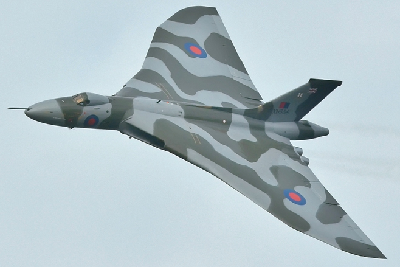

The ride protocols described in the Rider Guidance document and the Ride Documentation pack must be strictly applied.
On 2nd April 1982 Argentina invaded the Falkland Islands. Over the following 10 weeks UK Military Forces were mobilised and liberated the Falkland Islands. Part of the Military Response were the Black Buck bombing raids by Vulcan Bombers, the longest bombing missions ever attempted at the time. There are currently 15 Vulcans in the UK.
The Vulcan ride aims to visit the 13 of these accessible from a public highway. XH558 is inside a hangar but the others are kept outside. Serial numbers XJ824, XL318 (not included in the ride) are on display indoors at Imperial War Museum, Duxford and RAF Museum, Colindale respectively.
| Vulcan | Location | Coordinates |
|---|---|---|
| XM612* | Norwich aviation museum*** | 52.681095600128174, 1.277847290039063 |
| XL426* | Southend airport | 51.56790910169203, 0.7029788428114332 |
| XM655 | Wellesbourne, Warks | 52.196581363677979, -1.618144512176514 |
| XL360 | Coventry airport | 52.37436555325985, -1.480399249121547 |
| XM575 | East Midlands airport, Leics | 52.832179069519043, -1.348614692687988 |
| XM607 | RAF Waddington, Lincs | 53.33879126782664, -2.1508588895066048 |
| XM598* | RAF Cosford museum, Shrops*** | 52.644939422607422, -2.309145927429199 |
| XM603 | Woodford, Cheshire | 53.3352760796038, -2.151464782335706 |
| XJ823 | Carlisle airport, Cumbria | 54.942691326141357, -2.803916931152344 |
| XM597* | East Fortune airfield, North Berwick | 55.99398717883139, -2.722888590982728 |
| XL319 | Sunderland, Tyne and Wear | 54.92405810393393, -1.468014987185597 |
| XH558** | Doncaster Sheffield airport, South Yorks | 53.488743016496301, -1.006708145141602 |
| XM594 | Newark, Notts | 53.095602421090007, -0.760658215731382 |
* indicates a "corner" Vulcan. These must be visited during a Vulcan NEWS ride.
** The Vulcan is stored at the Vulcan Trust in hangar number 4. Take a photo of the hangar door showing number 4.
*** A photo of the entrance gate will suffice. The Vulcan is not visible from the road.
The Vulcan series of rides consists of:
Vulcan NEWS: Visit at least the four "corner" Vulcans while riding 1000 miles in 24 hours.
Vulcan Gold: Visit all 13 Vulcans while riding 1000 miles in 24 hours.
The basic rules are the same as for other IBA UK rides:
1. Ride the designated distance in the designated time (see below) on a safe route of your choice.
2. IBA UK requires that you document your ride with photographs. The photo must show BOTH the receipt AND your bike's odometer (mileage) reading IN THE SAME PHOTO. Receipts and odo readings must be legible. Record the Start and End details on Ride Documentation 2 and Ride Documentation 3 respectively.
3. Collect fuel and other receipts along your route and photograph each against your odometer. Track them, along with rest stops over 30 minutes, on Ride Documentation 4.
4. Complete all the remaining documentation in the Ride Documentation pack.
5. Copy all completed documentation and receipts and submit the copies, with your name on every sheet.
The Black Buck raids involved lengthy round trips returning to base. These rides should do the same.
This ride was devised by Gordon Sears #51239 and first certified 2022-04-30